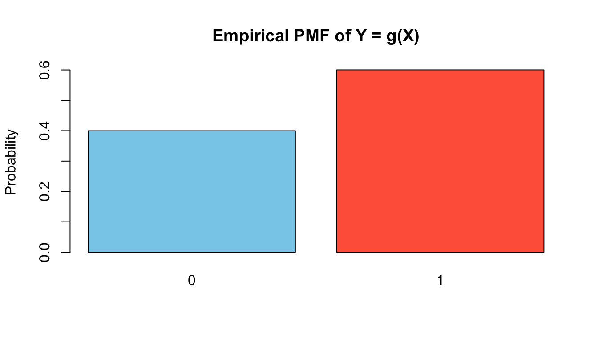

In simulation, our goal is to generate random variables with a specified distribution. As discussed earlier, this is typically done by starting with samples from a Uniform(0,1) distribution and transforming them into the desired form.
This raises a fundamental question:
How does the distribution of a random variable change when we apply a transformation?
When we apply a function to a random variable, the result is itself a new random variable. If \(X\) has a known distribution and we define \[
Y = g(X),
\]
then \(Y\) is also a random variable. To use transformations effectively in simulation, we need to understand:
What is the distribution of \(Y\), and how is it related to the distribution of \(X\)?
This question is central to many simulation methods. In particular:
In inverse transform sampling, we explicitly construct a transformation that converts Uniform(0,1) into a target distribution.
In other methods, transformations appear implicitly when we manipulate or combine random variables.
Understanding how distributions change under transformations therefore provides the theoretical foundation for many simulation techniques.
In this section, we develop the rules for transforming random variables in both:
the discrete case, where probabilities are reassigned across values, and
the continuous case, where probability density is redistributed under the transformation.
The key idea throughout is conservation of probability: although values change under transformation, total probability must remain unchanged.
16.1 Discrete Case
If \(X\) is discrete with PMF \(p_X(x)\), and \(Y = g(X)\), then the PMF of \(Y\) is obtained by collecting all values of \(X\) that map to the same value of \(Y\):
\[
p_Y(y) = \sum_{x : g(x) = y} p_X(x).
\]
This is simply a “probability bookkeeping” rule: every value of \(Y\) inherits probability from the \(X\)-values that produce it.
Example: Let \(X\) take values \(\{ 1,2,3,4\}\) with \[
P(X=1)=0.1,\quad P(X=2)=0.2,
\]
Determine the PMF of \(Y\) with possible values of 0 and 1.
For \(Y=0\): this happens when \(X\) is odd, i.e. \(X\in \{ 1,3\}\).
\[
P(Y=0)=P(X=1)+P(X=3)=0.1+0.3=0.4.
\]
For \(Y=1\): this happens when \(X\) is even, i.e. \(X\in \{ 2,4\}\).
\[
P(Y=1)=P(X=2)+P(X=4)=0.2+0.4=0.6.
\]
So the PMF of \(Y\) is
\[
P(Y=0)=0.4,\qquad P(Y=1)=0.6.
\]
We can try simulating the example:
set.seed(123)# Original discrete variableX <-sample(1:4, size =5000, replace =TRUE,prob =c(0.1, 0.2, 0.3, 0.4))# TransformationY <-ifelse(X %%2==1, 0, 1)# Plot empirical pmf of Ybarplot(prop.table(table(Y)),col =c("skyblue", "tomato"),main ="Empirical PMF of Y = g(X)",ylab ="Probability")

The heights close to the theoretical values of 0.4 and 0.6.
16.2 Continuous Case
The method used for transforming discrete random variables cannot be applied directly to the continuous case because probabilities at individual points no longer make sense: for a continuous random variable, \(P(X=x)=0\) for all \(x\). As a result, we cannot “collect probabilities” like the previous section; instead, we must work with how probability density is redistributed under a transformation.
For continuous random variables, there are in principle two approaches: a CDF‑based method, which derives the distribution of \(Y\) by working with cumulative probabilities, and a PDF‑based method, which determines how density changes under the transformation. In this subsection, we focus on the PDF‑based method, as it provides a unified and transparent way to handle both monotone and non‑monotone transformations.
When the transformation is monotone, each value of \(Y\) corresponds to exactly one value of \(X\), so the density of \(Y\) is obtained from a single contribution. In contrast, for non‑monotone transformations, multiple values of \(X\) may map to the same value of \(Y\), and the density of \(Y\) must account for all such contributions. This perspective emphasises conservation of probability and naturally extends to more complex transformations, including multivariate cases.
flowchart LR
%% Monotone transformation
subgraph M["Monotone Y = g(X)"]
direction TB
x1["x₁"] -->|"g"| y1["y₁"]
x2["x₂"] -->|"g"| y2["y₂"]
x3["x₃"] -->|"g"| y3["y₃"]
end
%% Non-monotone transformation
subgraph N["Non‑monotone Y = g(X)"]
direction TB
a1["x₁"] -->|"g"| b1["y₁"]
a2["x₂"] -->|"g"| b2["y₂"]
a3["x₃"] -->|"g"| b2
a4["x₄"] -->|"g"| b3["y₃"]
end
%% Notes
note1["Each y has exactly one preimage"]:::note
note2["A y may have multiple preimages"]:::note
M --- note1
N --- note2
%% Styling
classDef note fill:#f5f5f5,stroke:#999,stroke-dasharray: 4 4,color:#111;
style M fill:#f5f5f5,stroke:#999,stroke-dasharray: 4 4,color:#111;
style N fill:#f5f5f5,stroke:#999,stroke-dasharray: 4 4,color:#111;
%% Make all arrows black
linkStyle default stroke:#000,stroke-width:1.5px;
Monotone Transformations
If \(X\) is continuous with PDF \(f_X(x)\) and \(Y = g(X)\) where \(g\) is strictly increasing or decreasing, then the PDF of \(Y\) is given by the change‑of‑variables formula: